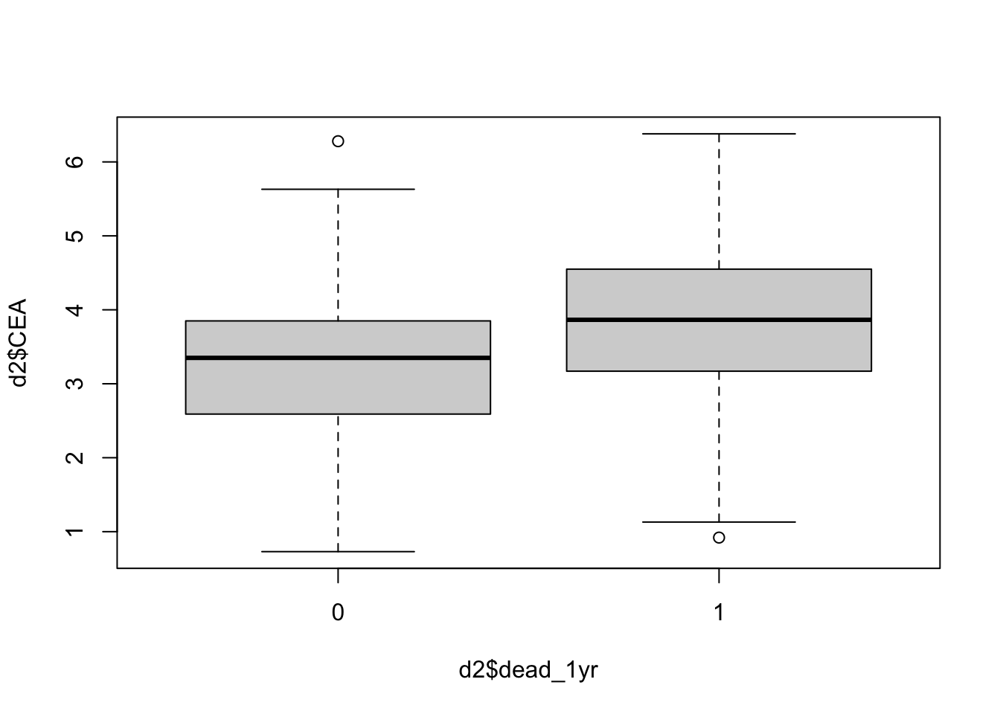

In these lab exercises you will gain experience with logistic regression as an analysis technique, and learn how to perform this method in R. For this, we use data from 376 patients with colorectal cancer with whom we measured carcinoembryonic antigen (CEA), a tumor biomarker. The goal of these exercises is twofold:
Study how the biomarker levels depend on the stage of the disease.
Determine how CEA can predict 1-year survival.
Data Description and Setup
The data include the following variables:
age and sex of each patient;
the stage of the disease (an integer between 1 and 5);
CEA, expressed in g/L;
a binary indicator dead_1yr, which is 1 if the patient is dead by 1 year from the data collection, and zero otherwise.
Load the data into R using the readRDS() function:
d2 <-readRDS("data2.Rds")str(d2) # Should show data.frame with 376 obs of 5 variables
Moreover, below we will occasionally use the logistic function. Hence, it is useful to define it in R such that we can easily call it when it is needed. Here, a is the name for the linear prediction, that is \(a = \beta_{0} + \beta_{1} x\):
# Define the logistic functiong <-function(a) { (1+exp(-a))^(-1) }
Descriptive Analyses
Before fitting a logistic regression model, we first try to get a better “feeling” for the data by performing some descriptive analyses.
Question 1
Create a contingency table of the disease stage stage and 1-year survival dead_1yr. Interpret the table. Does it look like there is an association between disease stage and 1-year survival?
TipTip
Think about which pattern (in terms of proportion) you would expect if there was no relation between disease stage and 1-year surival. In that case, across all stages of disease, the proportions of patients who died within one year would be …. Is this also the type of relation that you see in the data?
NoteAnswer
The proportion of patients who died within one year clearly changes (in favor of dying) as the disease stage progresses. Hence, it looks like there is an association between these to variables. In particular, stage 1 and 2 are associated with lower risks than the higher stages.
# Create a cross-table displaying counts of combinations of factor levelstab <-table(d2$stage, d2$dead_1yr)# Transform the counts of a cross-table to proportionsprop.table(tab, margin =1) # `margin = 1` indicates proportions by row
Question 2
Calculate the odds that a randomly selected patient with stage 1 dies within a year, and the odds that a randomly selected patient with stage 4 dies within a year. Then use the two odds to calculate an odds ratio. Explain in words what this odds ratio means.
NoteAnswer
The odds of dying within one year are computed as \(\frac{P(Y = dead)}{1 - P(Y = dead)}\). Hence, we first need to compute the probabilities \(P()\). Second, we can use the probabilities to compute the odds. These calculations need to be done for the stage 1 and stage 4 patients seperately.
# Compute the probabilities for the stage 1 and stage 4 patientsp1 <- tab[1, 2] /sum(tab[1, ])p4 <- tab[4, 2] /sum(tab[4, ])# Compute the oddso1 <- p1 / (1- p1)o4 <- p4 / (1- p4)# Compute the odds ratioo4 / o1
Explaining what the odds ratio means in everyday language is difficult, but we can repeat the mathematical definition: It is the ratio of two odds. See slides for more details.
Logistic Regression
Next, rather than only looking at (nondirectional) associations, we perform logistic regression to study if we can predict 1-year survival based on stage.
Question 3
Fit a simple logistic regression model where the response is dead_1yr and the predictor is stage (treated as factor, not as a numeric). A logistic regression can be run in R using the glm() function and setting as one its arguments family = binomial. Use the summary() function and comment on the output. Also calculate the probabilities that persons with stage 4 and stage 1 are dead within a year.
NoteAnswer
We fit a logistic regression model with the code below. Note the use of the factor() function, which indicates to glm() that the stage variable should be treated as an ordered categorical variable rather than as as continuous predictor. As a consequence, the stage variable will be split into dummy variables.
# Fit a logistic regression model (with dummy variables)mod1 <-glm(dead_1yr ~factor(stage), data = d2, family = binomial)
All parameters are significant, and the positive parameter estimates indicate a higher probability than 0.5 for people of stage 1 to die within a year, as well as an increased risk of death for people with higher stage values. The pattern from the frequency and proportion table is here as well.
# Summarize model outputsummary(mod1)# Interpret model coefficients using the logistic function: g(mod1$coefficients[1]) # Predicted probability for stage 1g(mod1$coefficients[1] + mod1$coefficients[4]) # Predicted probability for stage 4# Compare to estimates based on the tablep4
Note how the predictor probabilities from the exploratory descriptive analyses (from Question 1) and those from the logistic regression model are equivalent. This is because the logistic regression model contains as many parameters as there are pieces of information in the data, and hence the model is saturated and fits perfectly.
Question 4
Give a 95% confidence interval for the odds ratio of being dead within a year for stage 4 relative to stage 1.
NoteAnswer
We can simply request confidence intervals from (most) fitted models in R using the confint() function. Note, to ensure the parameters are the odds ratio scale, we still need to exponentiate using exp().
exp(confint(mod1)[4, ])
Question 5
Rerun the logistic regression model, but now treat stage as a numeric. Use the estimates from this model to calculate the probability that persons with stage 4 and stage 1 are dead within a year.
NoteAnswer
One can explicitely tell the glm() function that stage is a continuous variable by wrapping it in as.numeric(). Consequently, no dummy variables are created and hence fewer parameters are estimated.
# Fit a logistic regression (with continuous predictor)mod2 <-glm(dead_1yr ~as.numeric(stage), data = d2, family = binomial)# Summarize model outputsummary(mod2)# Compute predicted probabilities for stage 1 and stage 4g(mod2$coefficients[1] +4* mod2$coefficients[2]) # Stage 4g(mod2$coefficients[1] +1* mod2$coefficients[2]) # Stage 1
Question 6
Why are the probability estimates different depending on whether stage is treated as a factor or as a numerical? Which method is preferable?
NoteAnswer
If we treat stage as a numerical variable, we are stating that each one-unit increase in disease stage leads to a \(e^{\beta_{1}}\) multiplicative change in the odds, whether we go from stage 1 to stage 2, stage 2 to stage 3, etc. However, the preliminary inspection of the contingency table changes that the change in odds was stronger when going from stage 1 to stage 2, then from stage 4 to 5 (for example). Below, we see that we underestimate the risk for people of stage 3 of dying within a year if we use stage as a numerical variable.
# Stage 3g(mod2$coefficients[1] +3* mod2$coefficients[2])g(mod1$coefficients[1] + mod1$coefficients[3])# Value based on the contingency table is the same as with the regression model treating stage as a factor variable:tab[3, 2] / (sum(tab[3, ]))
When treating stage as an ordered categorical variable, we specify a more complex model (i.e., with more parameters), which is better able to accommodate this patters in the data. However, this is not to say that a model with more parameters is always better. After all, a model is supposed to be a simplified version of reality and hence we should always be balancing model complexity with fit to the data.
Question 7
Fit a simple logistic regression model where the response is dead_1yr and the predictor is CEA. Use summary() and comment on the results.
NoteAnswer
The effect of CEA on 1-year survival is estimated to be \(\beta_{1} = 0.6230\) which, on the odds ratio scale, is \(e^{\beta_{1}} = e^{0.6230} = 1.8645\). Hence, this indicates that increases in CEA are associated with an increased risk of dying.
# Inspect the density of the `CEA` predictorhist(d2$CEA)
# Fit a logistic regression model mod3 <-glm(dead_1yr ~ CEA, data = d2, family = binomial)# Inspect the model outputsummary(mod3)
Question 8
Visualize the distribution of CEA for participants who died within a year and survived a year. Does it support the estimates of the regression model?
NoteAnswer
To study this, we can simply split the data by dead_1yr and then plot CEA for each group. This can be done in multiple steps, are all simultaneously using boxplot(). The visualization shows that people who died within one year are having slightly higher CEA values.
boxplot(d2$CEA ~ d2$dead_1yr)

Question 9
Calculate the probabilities of being dead within one year for people with CEA levels of 2, 5 and 10. Should we trust these estimates?
NoteAnswer
To predict the probabilities of being dead within one year for people with CEA levels of 2, 5 and 10, we simply fill in the regression equation again just like in the lab on day 1.
I would not trust the CEA = 10 estimate, since no one has a CEA close to this value.
Question 10
In the below code, I (a) create a logistic regression model with dead_1yr as outcome and age as regressor, and (b) create a residual plot to check if the model fits the data well. Can you understand what the code does and interpret the plot?
agedead <-glm(dead_1yr ~ age, data = d2, family = binomial)cbind(agedead$fitted.values, residuals(agedead, type ="response"), d2$dead_1yr, d2$dead_1yr - agedead$fitted.values)plot(d2$age, residuals(agedead, type ="response"))
scatter.smooth(d2$age, residuals(agedead, type ="response"), family ="gaussian")
NoteAnswer
Look at the comments in the code to check what each line of code does
# Fit a logistic regression model in which 1-year survival is predicted by ageagedead <-glm(dead_1yr ~ age, data = d2, family = binomial)# Combine various columns in a single data framecbind( agedead$fitted.values, # The predicted (fitted) values based on the modelresiduals(agedead, type ="response"), # The model residuals d2$dead_1yr, # The observed outcomes d2$dead_1yr - agedead$fitted.values # The model residuals, manually computed)# Plot the residuals against the predictor ageplot(d2$age, residuals(agedead, type ="response"))
# Draw a line through the plot to better see the relation between the residuals and the predictorscatter.smooth(d2$age, residuals(agedead, type ="response"), family ="gaussian")
What makes this graph hard to read is that the circles we see consist of many people overlapping each other. The line shows an average of the residuals. Since it is around zero, it means that out of the participants who were given a particular probability of dying, the same proportion also died. In other words, our model is good, although the fit is not perfect for younger ages (but we have few observations there).